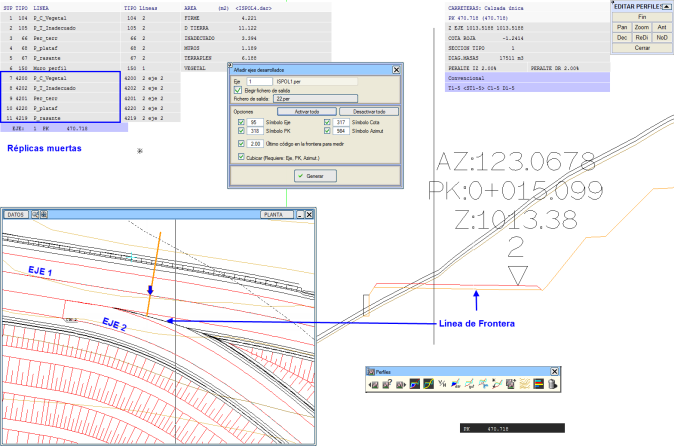
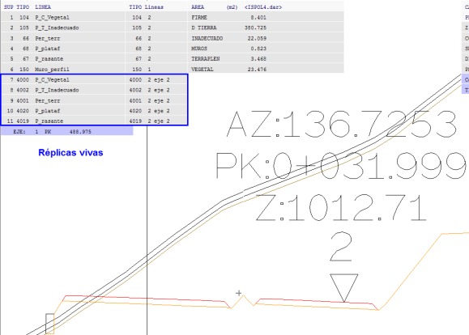

| |
|
GELİŞTİRİLMİŞ EKSENLERİ EKLE
|
Bu menü aracılığıyla, bağlı eksenlere aşağıdaki bilgileri içeren semboller ekleyebiliriz:
Ayrıca bir kod tanımlanabilir; bu sayede eklenen eksen daha yüksek öncelikli bir kod tarafından kesiliyorsa (sonlandırılıyorsa), bu enkesitler sadece gösterim amacıyla eklenir, ancak ana eksen ile ortak metraj hesabına dahil edilmez. Ekseni sonlandıran kod, tanımlanan koda eşit veya daha düşük öncelikli ise yüzeyler L4000-L4199 katman aralığında bir canlı kopya (live replica) olarak; eğer daha yüksek öncelikli ise L4200-L4299 aralığında bir ölü kopya (dead replica) olarak oluşturulur. 
Hacim Hesapla (Cubicar) onay kutusu etkinleştirildiğinde, program eksenin hacim hesabını yeniden yapar. Sınırdaki kodlar önceden tanımlanmış koda eşit veya daha düşük olduğunda, eklenen eksenlerin metrajları bu hesaba dahil edilir. Sonuç raporunu, Eksen kutusunda belirtilen eksene ait `cvoln.res` dosyasında bulabiliriz. 4000 ile 4199 arasındaki katmanlarda bulunan canlı kopyalara sahip enkesitlerin metrajları toplama dahil edilirken, 4200 ile 4299 arasındaki ölü kopyalara sahip enkesitlerin metrajları ana eksen hesabına eklenmez. Kopya (replica), ikincil bir eksene ait yüzeyin, ana eksenin enkesitine eklenmesiyle oluşturulan bir yapıdır. 
Bir eksenin, başka bir eksenle olan bir sınır çizgisi tarafından sonlandırıldığı bölgelerde program, sınır çizgisi üzerindeki noktayı diğer eksen üzerine projekte eder ve bu kilometre için hesaplanan enkesiti, tüm yüzeyleri ve arazi katmanları ile birlikte ana eksenin enkesitine ekler (yapıştırır). Bu işlem için Güzergah (Obra Lineal) modülünde kullanılan yüzeylerin L4000 ve L5000 katmanları arasındaki kopyaları kullanılır; orijinal yarı-enkesitler ve kodlar korunur. Oluşturulan kesit, katılım koluna dik olduğu için, üzerinde gerçek genişlikler ve deverler ölçülebilir. Sağ tarafta kalan katılım kolları için L4000-L4150, sol tarafta kalanlar için ise L4200-L4350 katman aralığı kullanılır. Enkesit Editöründe, uygun bir yakınlaştırma yapıldığında, kodlar tıpkı ana eksende olduğu gibi görüntülenir. (Bu komutun, enkesitin ana eksene dik bir kesit olduğu Katılım Kolu Ekle komutundan farkı; burada kesitin, enkesitte gösterilen her bir eksene kendi doğrultusunda dik olması ve bu nedenle kesit hattının ortak sınırlarda kırılarak ilerlemesidir). |